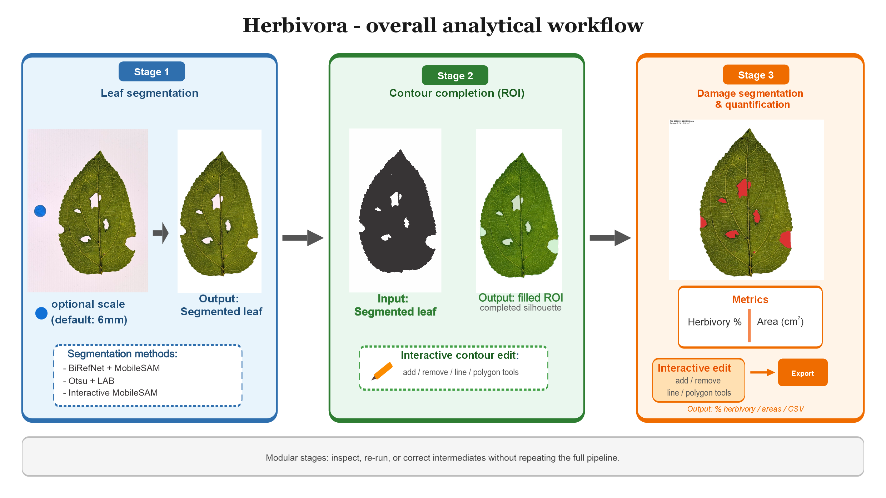

Herbivora
A deep learning desktop GUI for automated segmentation, contour detection, and bulk quantification of leaf herbivory.

Overview
Herbivora is a desktop application for plant ecologists who need reproducible estimates of leaf area removed or damaged by herbivores. It combines BiRefNet + MobileSAM segmentation, UNET Shape contour reconstruction, and a damage U-Net with interactive editing tools.
| Stage | What it does |
|---|---|
| 1. Segmentation | Isolates leaves from the background (BiRefNet + MobileSAM, Intact Leaves, or Interactive) |
| 2. Contour / ROI | Reconstructs the expected leaf silhouette with UNET Shape specialists and optional manual editing |
| 3. Analysis | Quantifies herbivory with a damage U-Net, including scraped tissue and frass-aware handling |
Key metrics
| Platforms | Windows 10/11 · macOS 11+ · Linux |
| Archived release | v1.4.1 · 10.5281/zenodo.22120799 |
| Contour leaf types | Auto, Entire/smooth, Serrated, Lobed, Compound |
| Acceleration | Optional NVIDIA CUDA (Windows/Linux) · Apple Metal / MPS (macOS) · CPU fallback |
| Primary outputs | results.csv and overlay images under
{output}/analyzed/ |
| License | PolyForm Noncommercial 1.0.0 (research and education) |
Features
- One GUI for the full pipeline: project setup, segmentation, contour reconstruction, and damage analysis.
- Leaf-type contour specialists so UNET Shape matches leaf morphology.
- Optional split of multiple leaves per photo into separate analysis units.
- Interactive editors to refine contour and damage masks (Add / Remove / Line / Polygon).
- Windows Setup.exe and macOS DMG installers, plus source installers for advanced users.
- Open U-Net weights on Hugging Face.
Quick start
- Download from Releases:
- Windows:
Herbivora-Setup-vX.Y.Z.exe(or Source ZIP +Install_Herbivora.bat) - macOS:
Herbivora-vX.Y.Z.dmg(or Source ZIP +Install_Herbivora.command)
- Windows:
- Install: run Setup on Windows, or drag the Herbivora icon to Applications on macOS. On first open, approve under System Settings → Privacy & Security → Open Anyway if macOS shows an unverified-developer warning.
- Complete first-time setup (downloads PyTorch + models).
- Open Herbivora and run Check installation on the Project tab.
Full steps for every OS are in the user guide. You do not need to install Python manually on Windows when using the recommended installer.
Typical workflow
- Project — set input / output folders; run Check installation. Optionally enable Multiple leaves per photo.
- Segmentation — BiRefNet + MobileSAM (recommended), Intact Leaves, or Interactive.
- Contour / ROI — pick leaf type (or Auto), run UNET Shape; optionally Edit Contour.
- Analysis — run the damage U-Net; optionally Edit Damage.
Results are written to {output}/analyzed/ (results.csv + overlays).
Leaves in the same photo should not touch or overlap, or they may merge into one component.
Citation
If you use Herbivora (or its trained weights) in a publication, thesis, or presentation, you must cite it under the noncommercial license.
Sandoval, M. (2026). Herbivora - A Deep Learning Software for Automated, Segmentation, Contour detection and quantification of Leaf herbivory (Version v1.4.1). Zenodo. https://doi.org/10.5281/zenodo.22120799
@software{sandoval_herbivora_2026,
author = {Sandoval-Molina, Mario},
title = {Herbivora - A Deep Learning Software for Automated,
Segmentation, Contour detection and bulk quantification
of Leaf herbivory},
version = {v1.4.1},
year = {2026},
publisher = {Zenodo},
doi = {10.5281/zenodo.22120799},
url = {https://doi.org/10.5281/zenodo.22120799}
}License
Herbivora software and Herbivora-trained U-Net weights are licensed under the PolyForm Noncommercial License 1.0.0 for noncommercial research and education only. Commercial use requires prior written permission. Attribution is required when the software or weights are used in scholarly or public work.